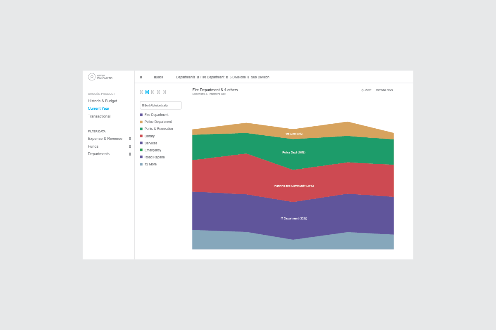
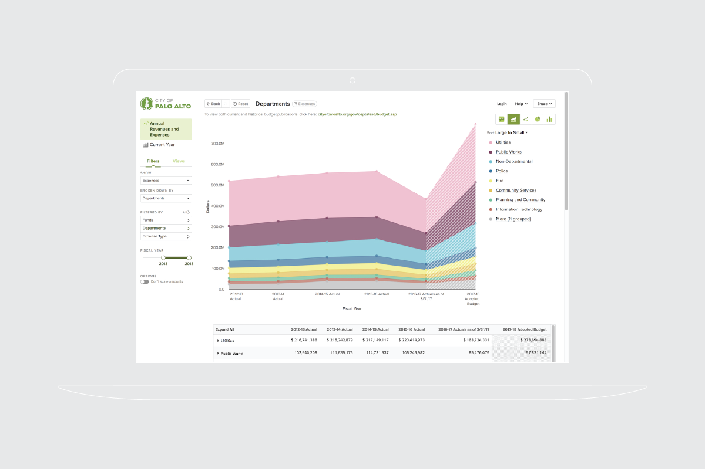
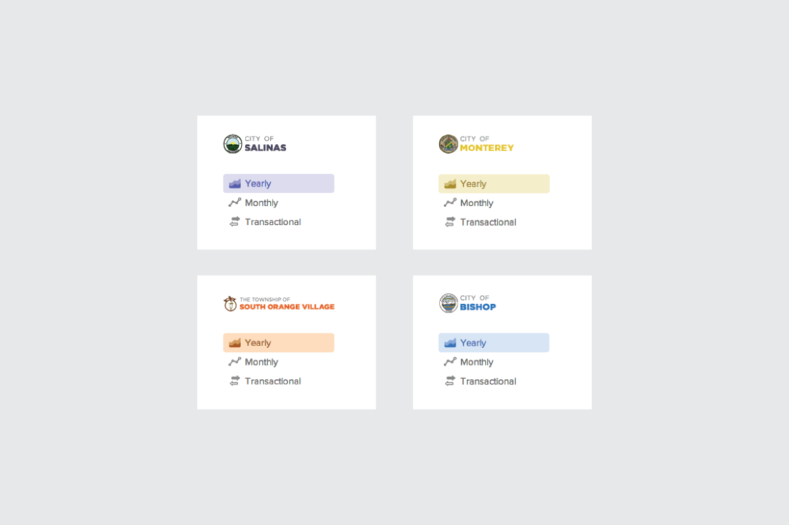

Over the last decade, an increasing number of government agencies have begun to provide their budgeting and financial data online. Governments started to question “How can we make our finances more transparent?” because simply putting those difficult to decipher 500-page budget document PDFs up for download isn’t enough.
Exploration
I joined OpenGov as the first employee to help tackle this challenging problem. Early prototypes were created to evaluate the market's demand for a better method to show the government's vast financial data. As we acquired more customers, we also received a plethora of feedback which helped us discover many major problems. As we reviewed the feature requests, bug tickets, and market reports, key issues and themes started to shaped form such as confusing navigation and filter tools that are difficult to find. We ran several usability tests remotely and that also confirmed the same core issues.
One of the core discoveries is that the aesthetic is misleading. When we asked people to describe their impressions of the product, we often heard comments about how sleek it felt, which is against the promises of the product that should evoke more feelings of transparency and honesty. And so we decided to do a major overhaul.

Diving in
There's no feeling quite like the moment your pencil first hits paper on a new project. After months of research and testing, the ideas were now flowing. Slowing down long enough to capture each new idea proved our greatest challenge.
Prototyping V2.7991

To avoid making the mistake of jumping from high-fidelity mockups to building out the final product, we took a week to hack together a prototype to test with customers.
We slapped together a (just barely) working prototype for the City of Palo Alto and Santa Cruz. We sat down with the customers and let them experience the updated product.
Before we launched, we did another round of user interviews and testing with a few selected beta customers, and the feedback was overwhelmingly positive. I remember walking into each customer interview fearing that this customer would prefer the old design. Thankfully, the customers affirmed our changes. With that validation in hand, we bunkered down and spent the next two months building the final product.

Onboarding new customers
To onboard the massive amount of new customers (almost a hundred local governments at the time), we also rolled out the theme system. It provides the ability for us to quickly customize the logo and overall UI color palette based on the city primary and secondary brand colors.

Results
After development came to a head, we spent three weeks conducting more thorough user tests and customer interviews. With several small iterations, the new version then gained us five times increase in sales in the following quarters, and our sales picked up significantly. Within six months, we were analyzing $50B worth of government spending.
Updated 2021:
It's been almost 10 years since I designed this product but it still looks like it's designed not too long ago and very little has been changed since. It's still going strong and hitting more than a thousand government customers across the States. I'm very proud of what the product has grown to become, and many thanks to my amazing co-designer Zach Johnston who helped push the possibilities and the teams who’re still taking good care of the product.